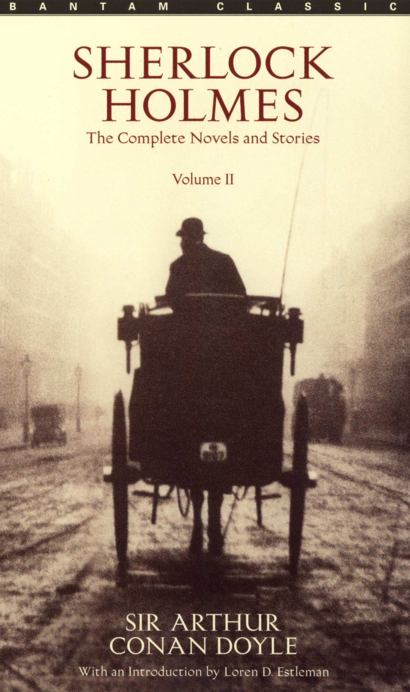

Jane Eyre
Jane Eyre tells the story of an orphan named Jane. Jane is raised by her hateful aunt, and loved by nobody. Jane is a woman who thinks and doesn't want to be trapped by what is expected of her. Although she is described as a woman with no beauty, she is still a wonderful and smart person. When she takes a job working as a governess for Mr. Rochester, she didn't expect to find love. Unfortunately, many things stand in their way, and a happy ending isn't always secure.
Another Book!
If you are looking for a dark, dystopian novel, look no further! 1984 is a story of emptyness, a missing world, and absolutely no hope. 1984 also has forbidden love, friendship, and betrayal.
1984Another Book!
Jane Eyre is a book with a strong female character who doesn't allow her lot in life determine her life. Jane Eyre is a beautiful Victorian novel and a class. This story also has love, loss, and bravery.
Jane EyreAnother Book!
A mad scientist? Mutant monster? Frankenstein immediately seems like an interesting story to anybody and is an amazing read! Be aware though that not everything is as it seems. Even monsters can love, and humans aren't always the ones in the right.
FrankensteinAnother Book!
Murders, mysteries, and a detective? Any crime junkie will love Sherlock Holmes and his loyal campanion Watson! With many stories of Holmes and crimes, you will be occupied from hours reading his adventures.
Sherlock HolmesAnother Book!

With love, trajedy, and sacrifice, A Tale of Two Cities is a beautiful piece that will move any reader! This book is one that will not be forgotten easily once you have finished it!
A Tale of Two Cities